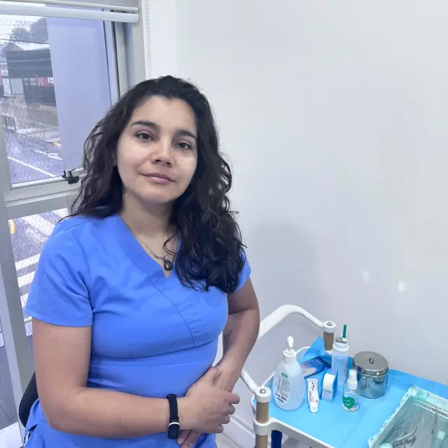

Atención Podológica Básica e Infantil
Onicotomía, pulido ungueal, pulido plantar y masaje podal.
$25.000Adultos mayores: 20% descuento
Cuidando la salud de tus pies con profesionalismo y dedicación.
Ofrezco atención podológica integral con más de 10 años de experiencia como técnico en enfermería. Mis servicios incluyen tratamiento de uñas encarnadas, hongos, pie diabético, ortomixia con brackets, y atención básica e infantil. Todos los tratamientos se realizan con técnicas modernas y profesionales en el centro de Osorno.
Onicotomía, pulido ungueal, pulido plantar y masaje podal.
$25.000Adultos mayores: 20% descuento
Tratamiento especializado para onicomicosis con formación en micología del pie.
$30.000Tratamiento completo incluyendo solución para uñas encarnadas.
$40.000Adultos mayores: 12,5% descuento
Sistema correctivo para uñas deformadas o encarnadas mediante brackets especializados.
$25.000 + $7.000/dedoIncluye atención podológica
Técnica de corrección ungueal mediante encarrilamiento con material PTFE.
$25.000 + $7.000/dedoIncluye atención podológica
Administración profesional de medicamentos vía intramuscular.
Desde $10.000No incluye medicamento
Curación profesional de heridas y lesiones cutáneas.
$12.000Control rápido y preciso de niveles de glucosa en sangre.
Consultar
Soy Soley Pérez Hernández, podóloga certificada y profesional de la salud, técnico en enfermería con más de 10 años de experiencia, dedicada al cuidado integral y al bienestar de cada paciente. Mi consulta podológica se encuentra en el centro de Osorno, donde atiendo con cercanía y compromiso a personas de todas las edades.
Mi objetivo es que cada paciente se sienta cómodo, seguro y bien atendido. Combino mi experiencia en enfermería con tratamientos podológicos modernos y efectivos, manteniéndome en constante capacitación profesional. Mi formación más reciente es en micología del pie, lo que me permite tratar de forma especializada los problemas de hongos en uñas y piel.
Trato afecciones como uñas encarnadas, pie diabético, callos, durezas y otros problemas frecuentes de la salud del pie. Si estás buscando una podóloga en Osorno que te entregue una atención profesional y humana, estaré encantada de ayudarte a mejorar tu calidad de vida.
Puedes agendar tu cita completando el formulario a continuación, llamando al +56 9 5038 4988, o contactándome directamente por WhatsApp. Atiendo en el centro de Osorno de lunes a domingo, según previa coordinación de horario.